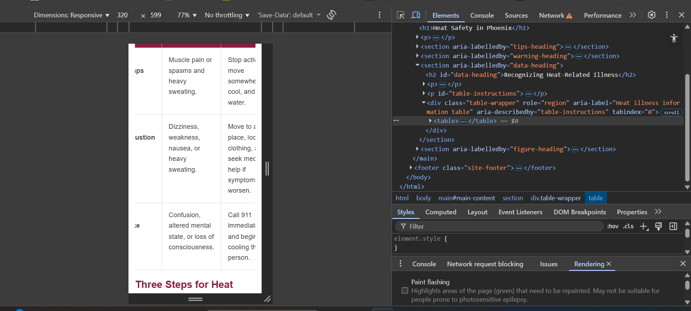
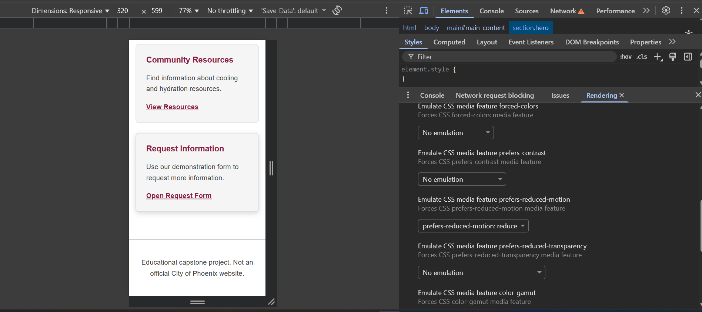

1. Project and URLs
- Project, audience, and purpose
- Phoenix Heat Safety & Resources is an educational website for Phoenix residents seeking information about extreme heat. Its purpose is to explain heat safety, identify community resources, and provide a demonstration information request form.
- Priority tasks
- Learn heat safety practices, explore cooling and hydration resources, and review an information request using the demonstration form.
- Pages
- Home, Heat Safety, Resources, and Request Information.
- Repository
- https://github.com/lafuent2-rgb/phoenix-heat-resources
- Published site
- https://lafuent2-rgb.github.io/phoenix-heat-resources/
- Code defense
- Code defense will be completed independently for the final capstone deliverable.
2. Concise Requirement Map
| Requirement | Location | Purpose | Reuse decision |
|---|---|---|---|
| Semantic HTML structure | All four HTML pages | Organizes headings, navigation, and main content. | Adapted from previous assignments. |
| Shared design system | styles.css | Provides reusable colors, spacing, and typography. | Adapted and refactored. |
| Figure and data table | heat-safety.html | Explains heat safety steps and illness warning signs. | New. |
| Accessible form | request.html and navigation.js | Demonstrates validation, feedback, and error recovery. | Adapted from the form assignment. |
| Original SVG | heat-resources.svg and resources.html | Illustrates water, shade, and cooling resources. | New. |
| Responsive navigation and layout | All pages and styles.css | Supports navigation and content at narrow widths. | Adapted from navigation assignments. |
| Positioning and layering | index.html and styles.css | Anchors the reminder badge inside the hero section. | Adapted from positioning practice. |
| Shape and motion | styles.css | Adds a decorative shape and reduced-motion support. | Adapted from CSS effects practice. |
| Testing and documentation | capstone-evidence.html and evidence-images | Records test results, findings, repairs, and screenshots. | New capstone documentation. |
3. Focused Release Check
- HTML and CSS validation: Passed. All five HTML files and both CSS files were checked using W3C validators.
- Published links and assets: Passed. The four-page GitHub Pages website, navigation, SVG, and form were checked in Chrome and Edge.
- Responsive layout: Passed at 320px, 768px, 1280px, and 200% browser zoom. No page-level horizontal overflow was observed.
- Keyboard and focus: Passed. Skip links, navigation, form controls, and keyboard scrolling within the Heat Safety table were tested.
- Form validation and recovery: Passed. Required fields and email validation worked. Outdated confirmation feedback was repaired and successfully retested.
- Reduced motion and JavaScript unavailable: Passed. Card movement was removed under reduced motion. Without JavaScript, the form notice appeared and the Review Request button remained disabled.
- Two current browsers: Passed in Google Chrome and Microsoft Edge.
4. Three Findings and Repairs
| Finding and condition | Impact | Repair | Exact retest and result |
|---|---|---|---|
| Finding 1: With JavaScript disabled, submitting a valid form reloaded the page without confirmation. | Users could mistakenly believe their information request had been submitted. | Added a no-JavaScript notice, disabled the submit button by default, and used JavaScript to enable it. Added a gray visual style for the disabled state. | Disabled JavaScript and refreshed request.html. The notice appeared and the button remained disabled. Re-enabled JavaScript and refreshed. The button worked and displayed the demonstration confirmation. Passed. |
| Finding 2: After reviewing a valid form, deleting the required email address left the previous confirmation message visible. | Users could mistake outdated confirmation feedback for a review of their current form information. | Added input and change event listeners in navigation.js to clear the previous confirmation whenever the form information changes. | Submitted a valid form, then deleted the email address. The confirmation disappeared immediately. After correcting the email and reviewing again, the confirmation reappeared. Passed. |
| Finding 3: At 320 CSS pixels, the heat illness table required horizontal scrolling, but there were no instructions explaining how to access the additional columns. | Visitors might not realize that more information was available. Keyboard users also needed a reliable way to reach the hidden columns. | Added visible scrolling instructions and made the table container keyboard-focusable with tabindex="0". Added an accessible name and description for the scrollable region. | Retested heat-safety.html at 320px. The instructions were visible, the table received keyboard focus, and the Left and Right arrow keys scrolled through the columns without page-level horizontal overflow. Passed. |
5. Screenshots


6. Sources, Assets, and AI
MDN/official sources: MDN HTML Tables , MDN Form Validation , MDN clip-path , MDN Reduced Motion , CDC Heat and Health .
Assets and licenses: The heat-resources.svg graphic was created for this educational project with AI-assisted SVG code. The heat safety figure uses HTML and CSS. Testing screenshots were captured from the project. No third-party images were used.
AI-assisted with disclosure: ChatGPT helped identify possible gaps, suggest debugging hypotheses, and propose small HTML, CSS, SVG, and JavaScript solutions. I made the integration decisions, tested the website in Chrome and Edge, and recorded my own observations. I verified the accepted changes and remain responsible for the final code and testing evidence.